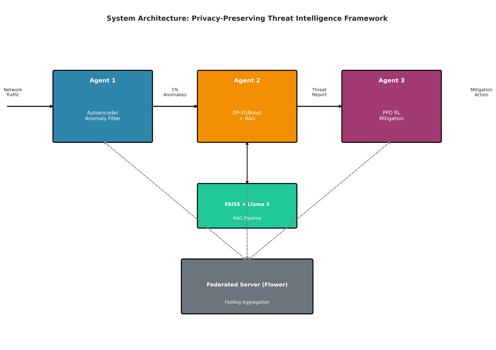
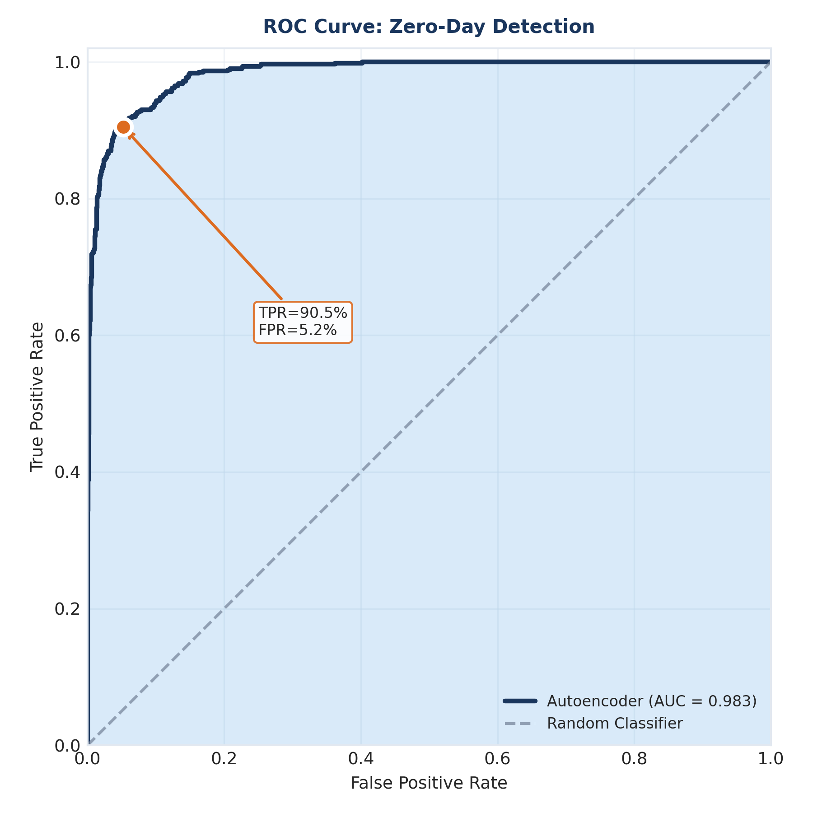
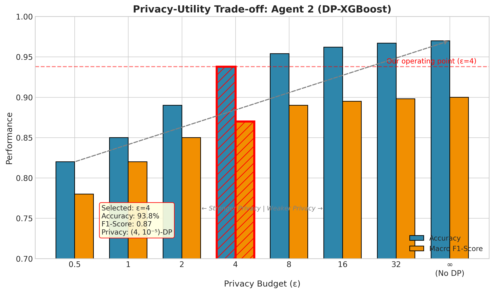
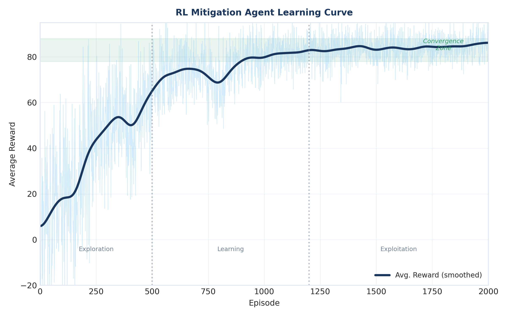
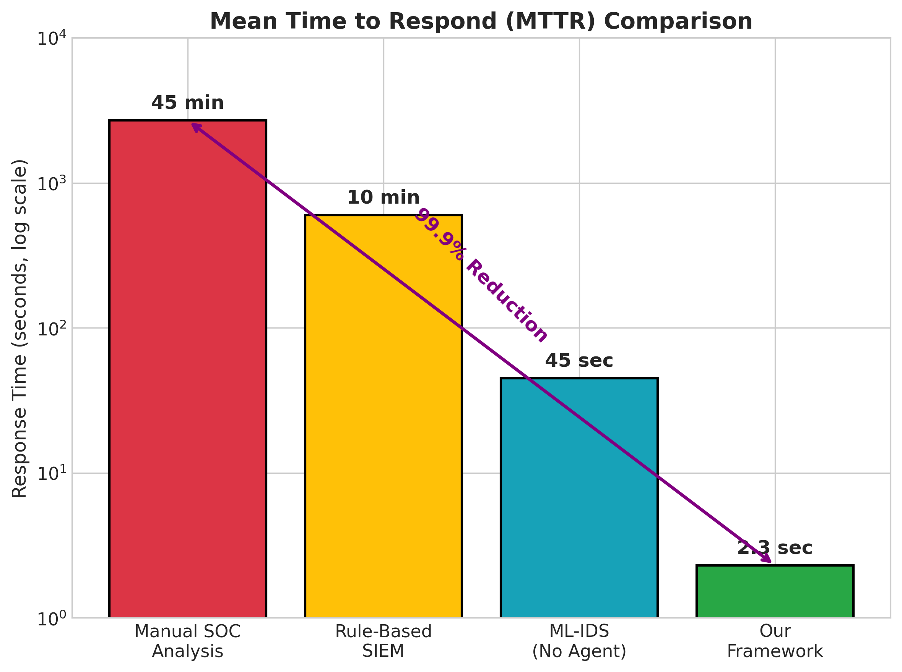
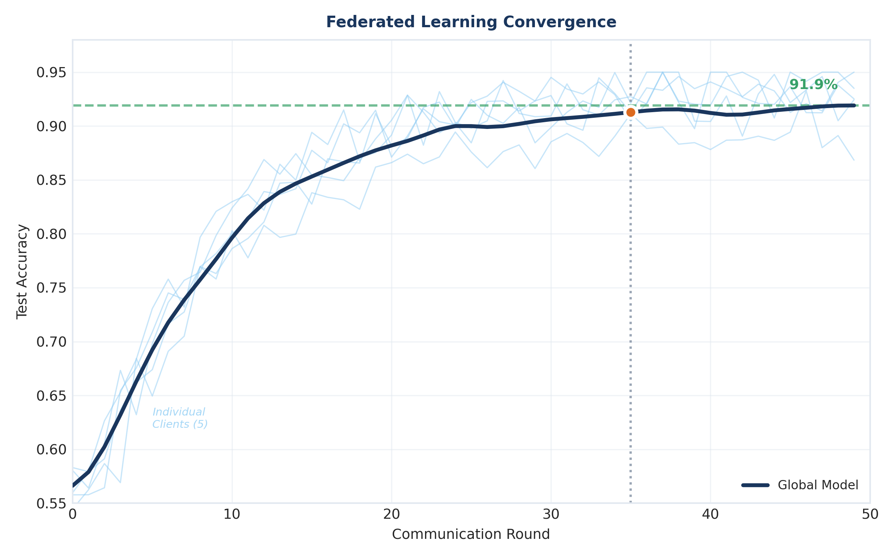

Hierarchical Cognitive Offloading
Fast anomaly filtering handles bulk traffic, while deeper reasoning is triggered only when uncertainty rises.
Final Year Research Project
Privacy-Preserving Cybersecurity Intelligence
This project proposes a federated, multi-agent defense pipeline that combines fast anomaly screening, privacy-aware threat classification, and adaptive response policy learning to reduce reaction time against unknown attacks while preserving data sovereignty.
Read Project SummaryEnterprises operate in a threat landscape where zero-day attacks emerge before signatures, rules, or threat feeds can be updated. Conventional IDS stacks are often tuned for known indicators and become unreliable when adversaries change behavior quickly. Our project addresses this gap with an architecture that balances speed, interpretability, and privacy for practical deployment. The system is organized into three coordinated agents and executed in a federated setting so organizations can improve global defenses without exposing local packet traces.

Agent 1 is a variational autoencoder that learns normal network-flow behavior and produces reconstruction error for anomaly gating. Instead of classifying every packet with heavy models, this first stage filters the majority of benign traffic in sub-millisecond time, then escalates only suspicious flows. Agent 2 applies differential privacy to model updates and performs multiclass threat classification on the reduced stream. To improve analyst usefulness, the classifier can be paired with a retrieval layer that links detections to contextual intelligence and structured explanations. This design limits expensive reasoning calls to uncertain or high-risk cases rather than all traffic, which keeps operational latency manageable in high-throughput environments.


Agent 3 uses reinforcement learning to recommend mitigation actions across a graded response spectrum, from monitoring and alerting to blocking and isolation. The reward design explicitly balances security gain against business disruption, reflecting a real SOC decision process instead of a purely detection-centric benchmark objective. Across repository materials and presentation analyses, the framework demonstrates a strong pattern: hierarchical cognitive offloading improves throughput and lowers unnecessary computation, while federated rounds with privacy constraints retain competitive detection utility.



Conclusion: The project contributes a practical path for collaborative zero-day defense where organizations can learn from one another through parameter exchange, maintain formal privacy guarantees, and still produce human-readable threat intelligence for incident response. In short, the system reframes modern IDS as a coordinated pipeline: deterministic screening for speed, selective intelligence enrichment for meaning, and policy-driven mitigation for timely action.
Fast anomaly filtering handles bulk traffic, while deeper reasoning is triggered only when uncertainty rises.
Organizations keep raw data locally and share model updates to build stronger collective defenses.
Noise-added updates and clipping reduce leakage risk while preserving usable threat classification quality.
Reinforcement learning proposes staged responses aligned with severity and operational constraints.
Canonical source repository: github.com/cepdnaclk/e20-4yp-Federated-Agentic-Defense-For-Zero-Day-Attacks
This page was authored specifically for this project using original paraphrased text derived from repository-owned materials, including presentation scripts and research outcome documents. Figures are locally hosted from this repository and are credited to the project team.
The team acknowledges that all final content, claims, and publication readiness are subject to supervisor review and approval before any formal submission or external dissemination.